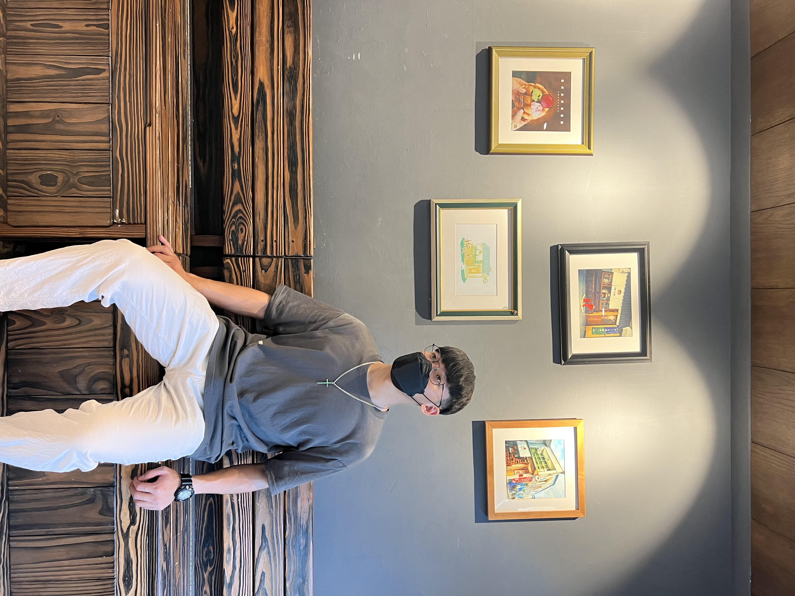

|  | ||
| 性別:男 生日:西元2003年6月13日 年齡:19 | 曾學習過的能力:Java 網頁設計:HTML | |
| 電子信箱:s1100387@gm.pu.edu.tw | 幹部經驗:高中:衛生股長、資訊股長 | |
| 應徵職務:MIS工程師 | 求職自傳:本人的科系是資訊管理系的學生，本身對資訊有部分的了解，而我對資訊這方面 有相當的熱忱，希望可以在這份工作上發揮自己的能力。 | |
| 學歷:靜宜大學(在學中) | ||
| 求學經歷 | 在學期間，從大一開始接觸到程式這方面的科目，雖然學習上遇到了重重困難，但 我還是保持著求知的渴望，努力向上。大二開始接觸到網頁程式的領域，發現學習上比 Java還要來得容易，開始對網頁程式的領域產生了興趣。 |
| 未來規劃 | 未來我希望在資訊的領域能持續進步，把所學的能力應用到職場上，在規劃上要加強Java跟網頁程式設計，並且 增進自己的語言能力，期望在多益方面取得金色證書，並在之後考取碩士學位，讓自己成為有學問的人。 |
返回上一頁